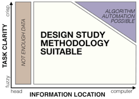

Design Study Methodology: Reflections from the Trenches and the Stacks

Venue. TVCG (2012)
Authors. Michael Sedlmair, Miriah Meyer, Tamara Munzner
Abstract. Design studies are an increasingly popular form of problem-driven visualization research, yet there is little guidance available about how to do them effectively. In this paper we reflect on our combined experience of conducting twenty-one design studies, as well as reading and reviewing many more, and on an extensive literature review of other field work methods and methodologies. Based on this foundation we provide definitions, propose a methodological framework, and provide practical guidance for conducting design studies. We define a design study as a project in which visualization researchers analyze a specific real-world problem faced by domain experts, design a visualization system that supports solving this problem, validate the design, and reflect about lessons learned in order to refine visualization design guidelines. We characterize two axes - a task clarity axis from fuzzy to crisp and an information location axis from the domain expert's head to the computer - and use these axes to reason about design study contributions, their suitability, and uniqueness from other approaches. The proposed methodological framework consists of 9 stages: learn, winnow, cast, discover, design, implement, deploy, reflect, and write. For each stage we provide practical guidance and outline potential pitfalls. We also conducted an extensive literature survey of related methodological approaches that involve a significant amount of qualitative field work, and compare design study methodology to that of ethnography, grounded theory, and action research.